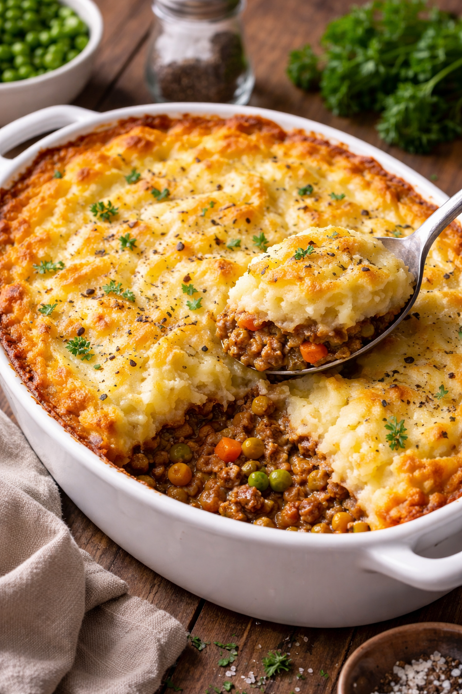

Home
Shepards Pie

Description
Shepherd’s pie is a classic comfort dish traditionally made with minced lamb cooked in a savory gravy with vegetables such as onions,
carrots, and peas, then topped with a thick layer of creamy mashed potatoes and baked until golden. Originating in the British Isles,
the dish was historically a practical way to use leftover roasted meat. The rich filling and fluffy potato topping create a balanced
meal that is hearty, warm, and deeply satisfying, making it a staple home-cooked dinner across Ireland and the United Kingdom.
Ingredients
- 1 lb (450 g) ground lamb
- 1 tablespoon olive oil or butter
- 1 medium onion, diced
- 2 carrots, diced
- 2 cloves garlic, minced
- 1 cup peas (fresh or frozen)
- 2 tablespoons tomato paste
- 1 cup beef or lamb broth
- 1 teaspoon Worcestershire sauce
- 1 teaspoon thyme (fresh or dried)
- Salt and black pepper to taste
For Mashed Potatoe Topping
- 2 pounds (900 g) potatoes, peeled and chopped
- 4 tablespoons butter
- ½ cup milk or cream
- Salt and pepper to taste
Cooking Instructions
- Preheat the oven to 400°F (200°C).
- Place the chopped potatoes in a pot of salted water and boil until tender, about 15 minutes. Drain and mash with butter, milk, salt, and pepper until smooth. Set aside.
- Heat olive oil in a large skillet over medium heat. Add the diced onion and carrots and cook for 5 minutes until softened.
- Add the garlic and cook for 1 minute until fragrant.
- Add the ground lamb and cook until browned, breaking it apart with a spoon.
- Stir in tomato paste, broth, Worcestershire sauce, thyme, peas, salt, and pepper. Simmer for 5–7 minutes until slightly thickened.
- Transfer the meat mixture into a baking dish and spread it evenly.
- Spoon the mashed potatoes over the top and spread them to cover the filling. Use a fork to create texture on the surface.
- Bake in the oven for 20–25 minutes until the top is lightly golden.
- Let the pie rest for 5 minutes before serving.